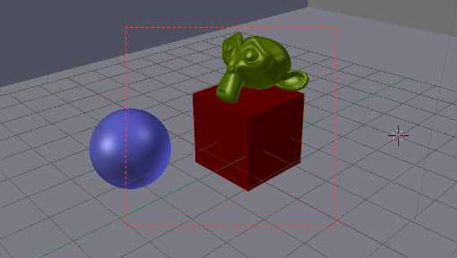
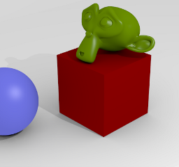

Introduction¶
A Camera is an object that provides a means of rendering images from Blender. It defines which portion of a scene is visible in the rendered image. By default a scene contains one camera. However, a scene can contain more than one camera, but only one of them will be used at a time. So you will only need to add a new camera if you are making cuts between them. See Animating Cameras.
Changing the Active Camera¶
Reference
Ctrl-Numpad0Active camera (left one).
The active camera is the camera that is currently being used for rendering and camera view
Numpad0.
Select the camera you would like to make active and press Ctrl-Numpad0
(by doing so, you also switch the view to camera view). In order to render,
each scene must have an active camera.
The active camera can also be set in the Scene tab of the Properties Editor.
The camera with the solid triangle on top is the active camera.
警告
The active camera, as well as the layers, can be specific to a given view, or global (locked) to the whole scene. See Local Camera.
Render Border¶
Reference
Ctrl-BRender Border toggle.
While in camera view, you can define a subregion to render by drawing out a rectangle within the camera’s frame. Your renders will now be limited to the part of scene visible within the render border. This can be very useful for reducing render times for quick previews on an area of interest.
The border can be disabled by disabling the Border option in the Dimensions panel in the Render tab or by activating the option again.
注解
When Render Border is activated, Sampled Motion Blur will become available to view in the 3D View.

|

|